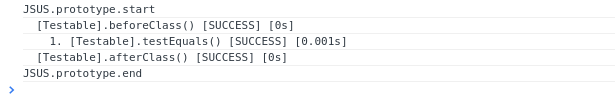

JavaScript Unit teSting
JSUS is a very, very simple unity testing framework for Javascript. How to use:
<!DOCTYPE html>
<html>
<head>
<title>JSUS</title>
<script type="text/javascript" src="http://rawgit.com/crisstanza/jsus/master/js/JSUS.js"></script>
<script type="text/javascript" src="js/Testable.js"></script>
<script type="text/javascript" src="js/js.js"></script>
</head>
<body></body>
</html>The contents of js.js is:
(function() {
function init() {
var jsus = new JSUS(Testable);
jsus.start();
jsus.end();
}
window.addEventListener('load', init, false);
})();And Testable.js is your test case:
function Testable() {
}
Testable.prototype.beforeClass = function() {
}
Testable.prototype.afterClass = function() {
}
Testable.prototype.testEquals = function() {
var expected = 1;
var current = 1;
{
JSUS.assertEquals(expected, current);
}
};Results
Results are shown on the console:

Supported Assertions
JSUS.assertEquals(expected, current);
JSUS.assertNotEquals(expected, current);
JSUS.assertTrue(current);
JSUS.assertFalse(current);
JSUS.assertNull(current);
JSUS.assertUndefined(current);
JSUS.assertBetween(expectedMinExc, expectedMaxExc, current);Support or Contact
Check out http://github.com/crisstanza/jsus